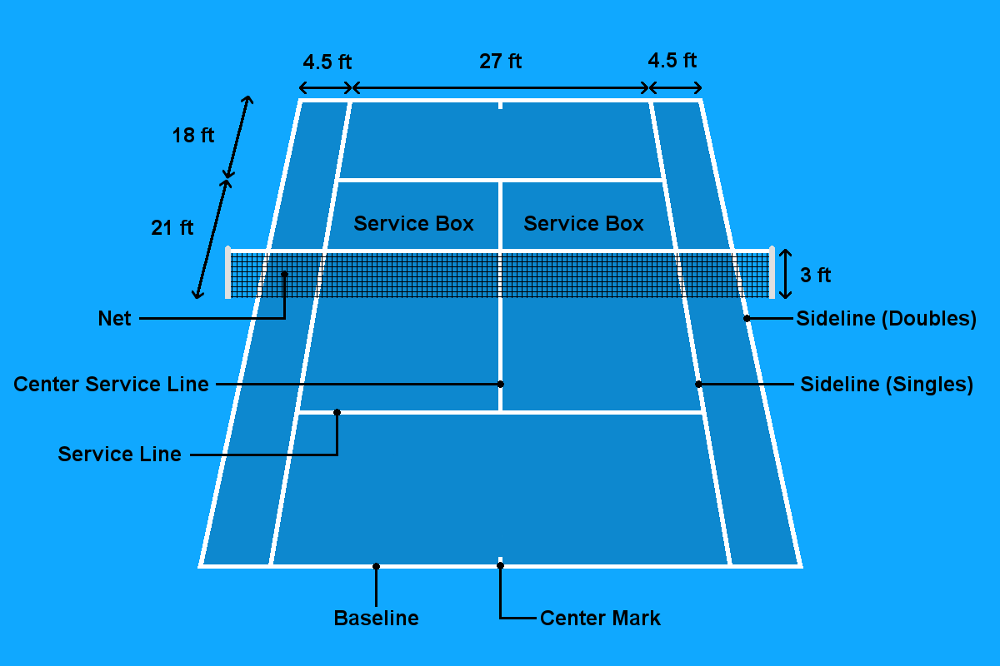

Rules of Tennis
Before understanding how to play the game, you must learn about the medium in which you are playing, the court. There are many lines on a tennis court. The main line that most players play around is the baseline. This line marks if the ball goes too far or not and is where a player stands behind when they serve. The next major line is the service lines/box, which comprises of the service line and the center service line, which determine if a serve is in or out. The next line is the sidelines. These lines span the entire length of the tennis court and are also separate based on if the match is a doubles match or a singles match. If it is singles they play based on the inner line, but if it is doubles, then they play based on the outer line. Keep in mind that the service box is based on the singles sideline. Lastly, there is an obstacle, which is the dreaded net. The height of the net is 3 feet in the center and 3 and a half feet on the sides.
The match starts with someone flipping a coin or spinning a racket to see who goes first. Whoever wins the flip/spin, chooses either to serve or return, or which side they want to play on. After they have made their decision, they go to their sides and the match begins.
A set comprises of games, first to 6 and win by 2, wins the match. Each game, a different player serves the ball. So to start a game, a player would go the right side of the small dash on the base line, and serve over the next and in the box closest to the next on the opposite side. For example, in the picture below, if the server is on the right side, they would be above the dash, behind the baseline and serve over the net and in the lower box on the opponent’s side.
From here, the opponent’s goal is to get the ball to the other side within the boundaries. And the point continues until a player makes an error, via hitting the ball into the net or hitting out. There are various other ways for a point to end, however, these are the most common. After this point, the player who is serving will go to the other side of the center dash and serve into the other service box.
As mentioned previously, a match is a race to 6 games, win by 2. Each game is basically first to 4 points, win by 2, however, the scoring is not the same as most of ther sports. Instead of 1, 2, 3, 4, it goes as follows:
- 0 points = Love
- 1 point = 15
- 2 points = 30
- 3 points = 40
- 40-40 = Deuce
- Tied score = All
- Server with a point ahead = Ad-In
- Server with a point behind = Ad-Out